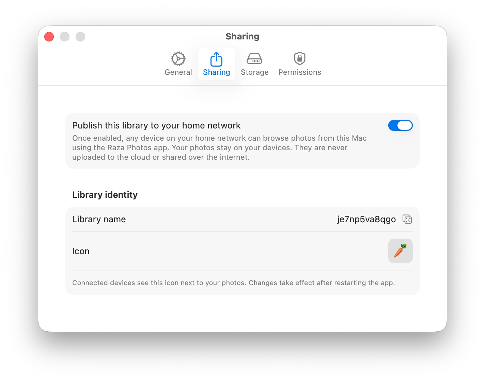

The Mac server runs only when you want it to. Start it at login for always-on family access, or keep it off and use the app as a local viewer on your Mac alone.
The sharing panel on Mac gives you everything in one place. Turn the server on or off, set it to start automatically at login, choose who can make changes, and see at a glance what's currently shared.
